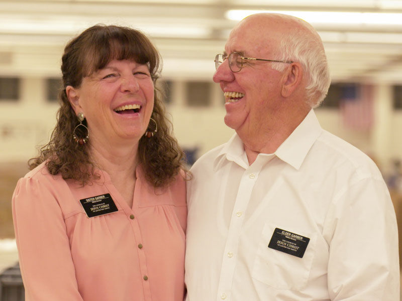

Target Audience:
We will cater to anyone who is willing to follow our terms and policies. Our target audience is temple workers, patrons, and their families. We want to provide a place to stay for people who are traveling to attend the temple. We also provide free changing rooms to those who need a place to change into and out of church clothes. We are family friendly and provide low-cost, short-term babysitting. We also offer long term accommodations for full-time temple missionaries. We have a wedding reception hall with catering, or access to the kitchen. We also have a family search center with missionaries to help you find your ancestors or print out name cards for your temple visit!
Personas
Persona 1
Young Single Adult Group Coming to Visit the Temple
- 18 to 30 year olds
- Single
- Some form of colloge education
Persona 2
Two Full-time Senior Missionaries
Elder and Sister Garber
- 65 years old
- Married
- Serving a mission for the Church of Jesus Christ of Latter-day Saints